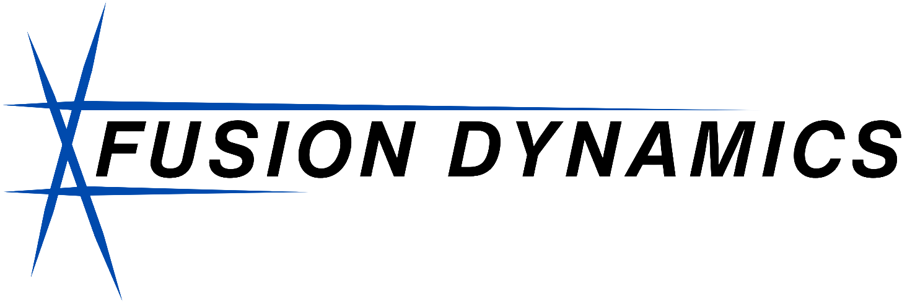

Landing guidance that lives in the dock, not the drone: an IR beacon board and a structural power board for a sub-250 g airframe.
Electrical Engineering Intern · Fusion Dynamics · June 2026 to Aug 2026

The goal
Instead of making every drone smart, the dock does the thinking. A camera watches infrared lights under the drone and steers it down, so the drones stay cheap and interchangeable.
What I did
I interned at Fusion Dynamics, a plasma technology company working on aerospace applications, where I worked on a drone-agnostic autonomous docking station designed so any approved drone could dock and land without a pilot in the loop, with the intelligence living in the dock rather than the drone itself.
My work on this project spanned both planning and hardware. I scoped the project's architecture, including the fiducial marker and IR beacon landing approach, vision guidance strategy, and command uplink architecture, along with a staged v1/v2 rollout plan to sequence the work. On the hardware side, I designed the four-LED 850 nm IR beacon board, with the LEDs in an asymmetric pattern to support IR-based landing guidance, verifying the layout through design rule checks and generating manufacturing files. I reviewed the 4-layer 95 x 55 mm structural frame PCB, sized to double as both the drone's top plate and its power distribution board, keeping drones cheap, lightweight, and easily interchangeable across the fleet while all system intelligence stayed centralized in the dock.
For the beacon, I compared candidate LED geometries computationally and picked a layout with nearly 3x the rotational distinctness of the initial candidate (12.0 mm versus 4.3 mm RMS), so the pose solver could not lock onto a wrong orientation. Instead of a linear LED driver, I powered the LEDs from the drone's existing 5 V rail and sized the current limiting resistors against worst-case supply and LED tolerances. On the frame board, my review caught two issues before fabrication: a connector pin shortage, and a conflict between the board's 2 oz copper and the fab's controlled-impedance service, which only offers 1 oz.
Results
- Beacon layout with nearly 3x the rotational distinctness of the initial candidate (12.0 mm versus 4.3 mm RMS), taken through DRC and Gerber export
- Two frame board issues caught in review before fabrication: a connector pin shortage and a 2 oz copper versus controlled-impedance conflict
No pictures or work files due to NDA.